デーサンダームイの登山2017春
デーサンダームイは、本部町の円錐カルストの山々のひとつ。
ミラムイ（本部富士）、ウフグシムイの近くある山である。
カルスト駐車場からデーサンダームイ頂上までは30分もかからない。 しかし、デーサンダームイへの取り付き点からの登山道は、道がかなり急勾配で危険である。 慎重、丁寧に登らねばならない。
カルスト駐車場→遊歩道→デーサンダームイ入口まで
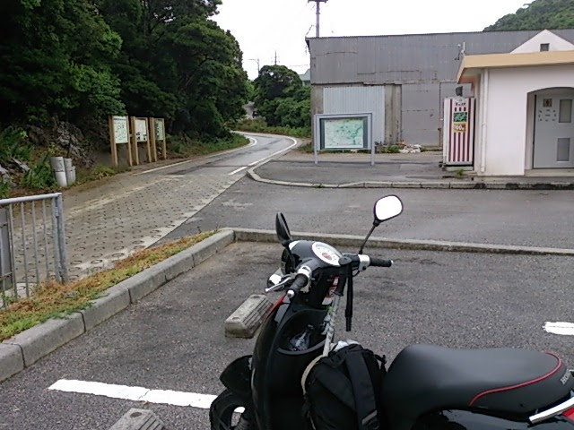 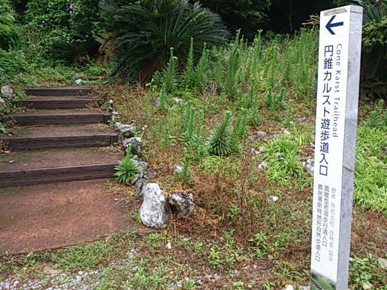 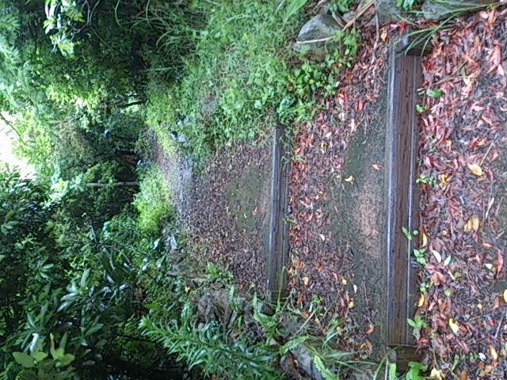 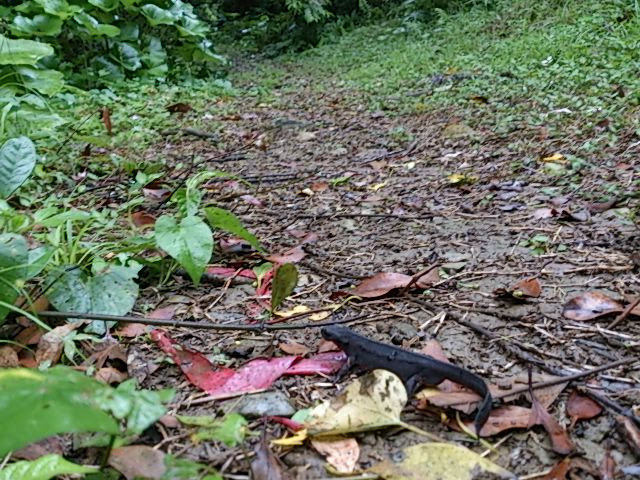 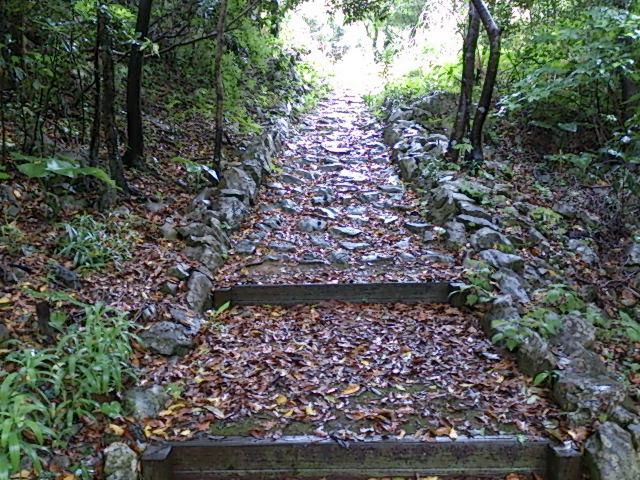 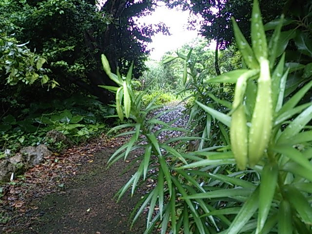 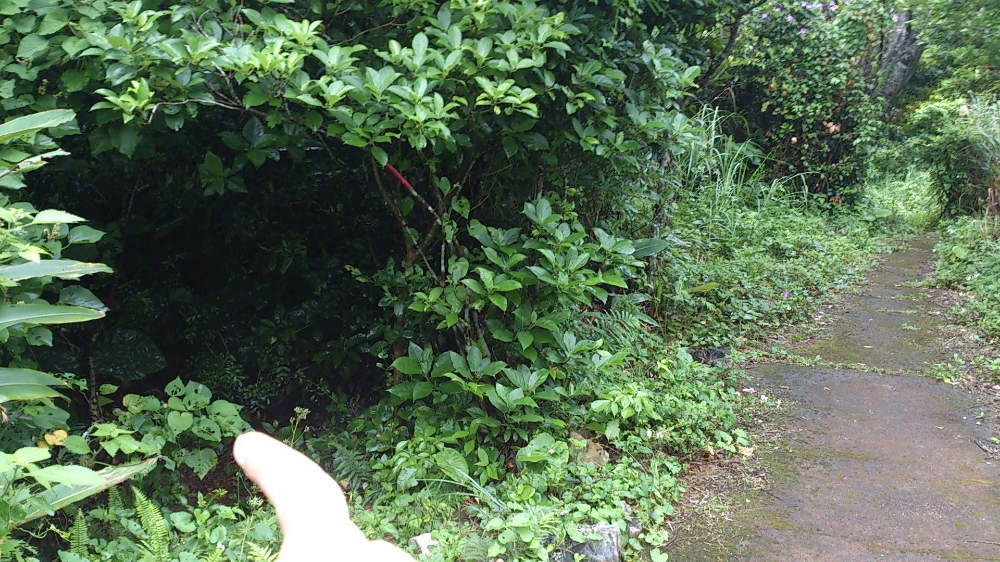
2017年5月のゴールデンウィーク。
カルスト駐車場から近くにある円錐カルスト遊歩道の入り口に向かう。
階段になっている遊歩道に入り、デーサンダームイ入口に向かう。
この時期はシリケンイモリが歩いているので踏まないように注意する。
屋敷跡を通り過ぎしばらく進むと、左脇に赤テープがまかれた木が見える。
ここから左側の野道がデーサーンダームイの入口である。
遊歩道入口からデーサンダームイ入口まで10分もかかない。
デーサンダームイ入口から頂上まで登山
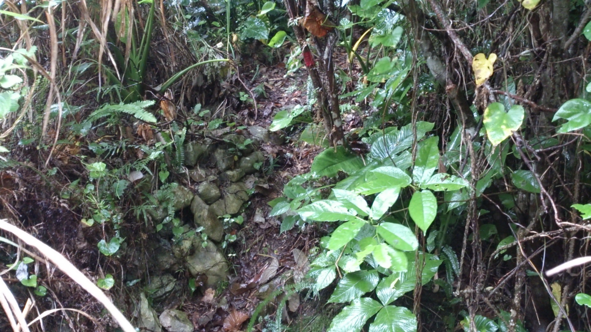 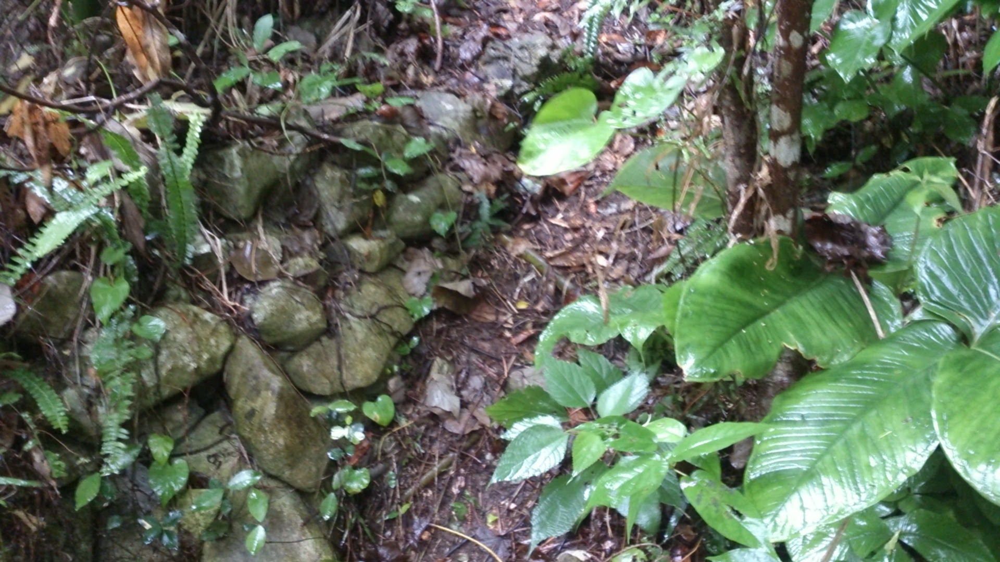 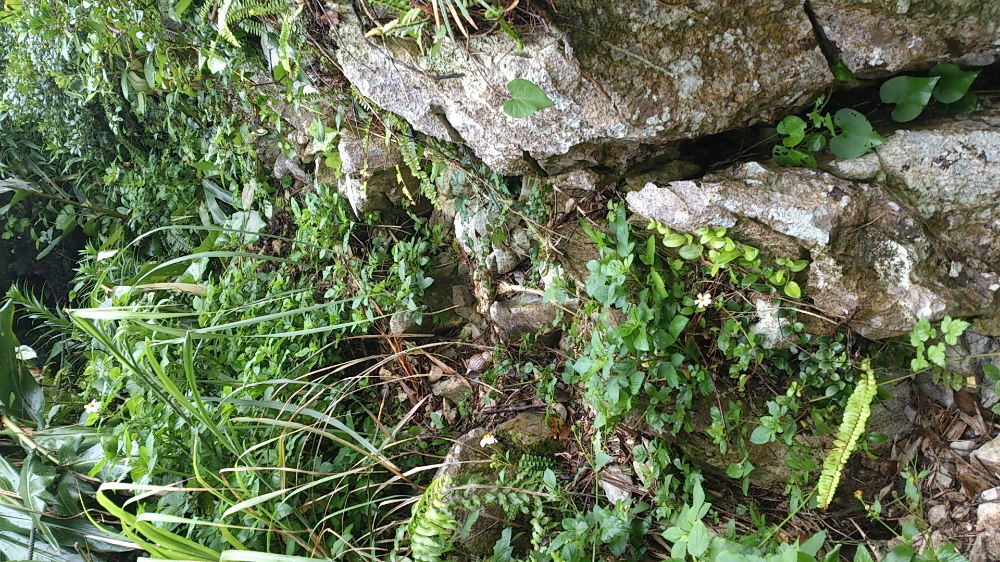 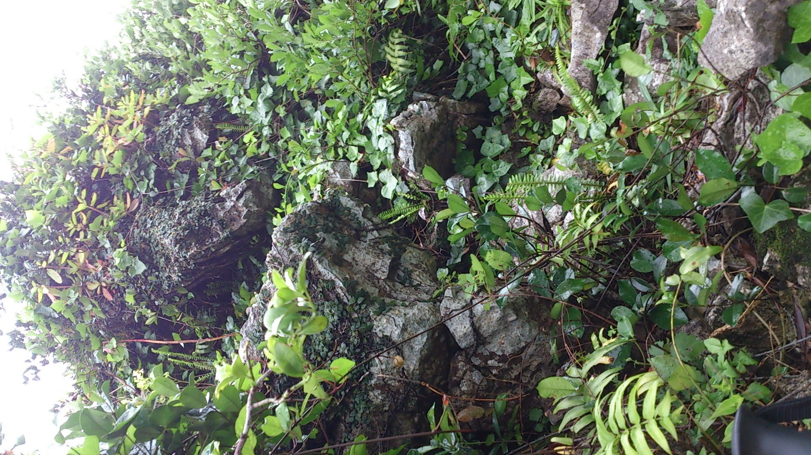
デーサーンダームイの入り口は、ヤブだらけで入れなさそうに見える。
入り口から進むとすぐに山への取り付き点に着く。
取り付き点から頂上までは急勾配で野性味にあふれた道になる。
ロッククライミングとまではいかないが、両手をしっかり使い、丁寧に慎重に登ること。
険しい道だが距離は短い。ゆっくり登っても20分かからず頂上へ着く。
頂上
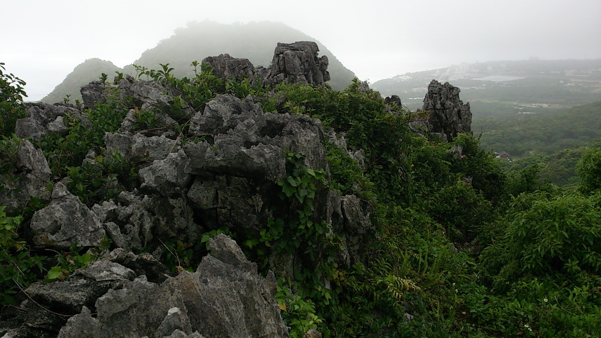 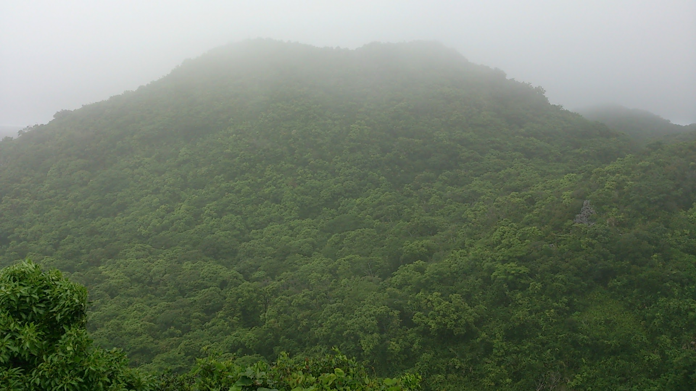
どの山もそうだが、頂上に着いたら後ろを振り返り、下山のための道をよく確認すること。
下山するときどこから登ってきたか分からなくなるからである。
頂上はひらけてた岩場であるので、低山とは思えない見晴らしである。
目の前にウフグシムイと本部富士（ミラムイ）がそびえ立つ。
今回は、弱雨であったが霧がかかっており風も強かった。
下山
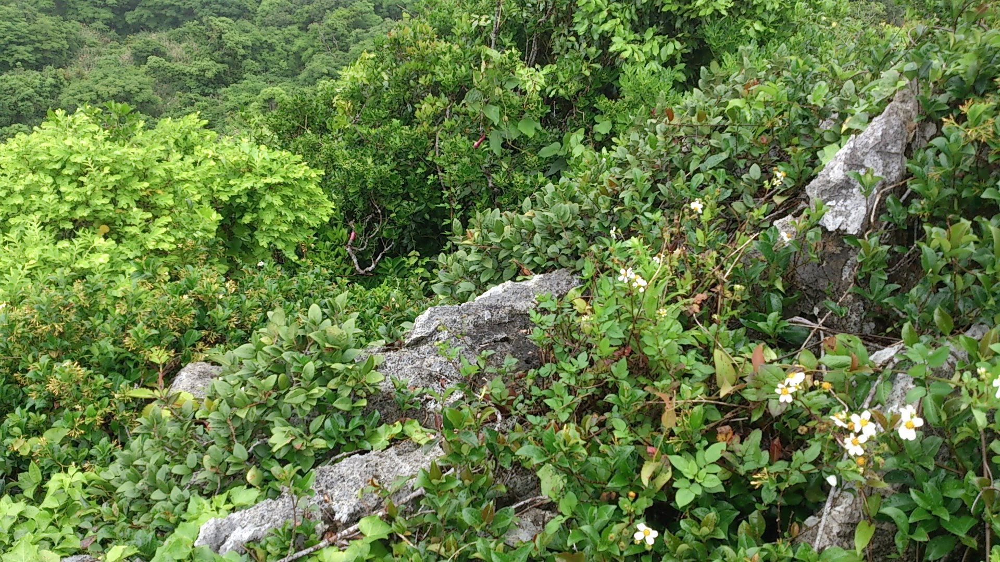 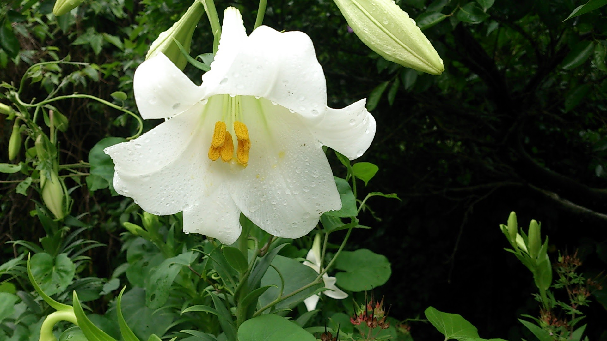
下山は来た道を戻る。
まぎわらしい出口のような場所があるので注意する。
下山後
カルスト駐車場のまわりにはテッポウユリがたくさんあり、観光客もそれを目的に訪れているようだ。
ゴールデンウィークの時期は花が咲くはずだが、今年はまだ、ほとんど咲いていなかった。
ホーム
プログラミングの覚書目次
旅記録一覧
デーサンダームイの登山2017春